![Image, Figure 6.10 Image tracing is shown were (i) A ray parallel to the principal axis after reflection will pass (or appear to pass) through the principal focus. (Figure 6.10(a)) (ii) A ray passing (or appear passing) through the principal focus, after reflection will travel parallel to the principal axis. (Figure 6.10(b)) (iii) A ray passing through the centre of curvature retraces its path after reflection as it is a normal incidence. (Figure 6.10(c)) (iv) A ray falling on the pole will get reflected as per law of reflection keeping principal axis as the normal. (Figure 6.10(d))](images/image-17.png)
There are two ways of spreading light: to be the candle or the mirror that reflects it. — Edith Wharton
In this unit, the students are exposed to,
Light is mystical. Yet, its behaviour is so fascinating. It is difficult to comprehend light as a single entity. The ray optics deals with light that is represented as a ray travelling in straight lines. Here, the geometrical constructs get the permanence to understand some of the characteristics of light and the phenomena associated with it. There are several other phenomena which can only be explained using wave optics, which we study in the next Unit. There is also a quantum aspect of light which we can study as quantum optics in graduate level courses.
Light travels in a straight line in a medium. Light may deviate in its path only when it encounters the boundary of another medium (or) an obstacle. A ray of light gives information only about the direction of light. It does not give information about the other characteristics like intensity and colour of light. However, a ray is a sensible representation of light in ray optics. The path of the light is called a ray of light and a bundle of such rays is called a beam of light. In this chapter, we can explain the phenomena of reflection, refraction, dispersion and scattering of light, using the ray depiction of light.
The bouncing back of light into the same medium when it encounters a reflecting surface is called reflection of light. Any polished surface can reflect light. Mirrors which are silver coated at their back can reflect almost 90% of the light falling on them. The angle of incidence i and the angle of reflection r are measured with respect to the normal drawn to the surface at the point f incidence of light. According to laws of reflection,
1. The incident ray, reflected ray and normal to the reflecting surface are all coplanar (that is lie in the same plane).
2. The angle of incidence i is equal to the angle of reflection r.
i equal to r equation (6.1)
The law of reflection is shown in Figure 6.1.
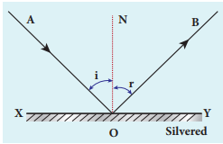
The laws of reflection are valid at each point for any reflecting surface whether the surface is flat (or) curved. If the reflecting surface is flat, then incident parallel rays after reflection come out as parallel rays as shown in Figure 6.2(a). If the reflecting surface is irregular, then the incident parallel rays after reflection come out as irregular rays (not parallel rays). Still the laws of reflection are valid at every point of incidence in irregular reflection as shown in Figure 6.2(b).
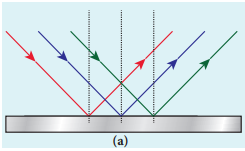
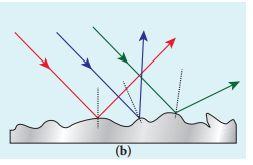
The angle between the incident ray and deviated ray of light is called angle of deviation. It is calculated by a simple geometry as shown in Figure 6.3(a). The incident light is AO. The reflected light is OB. The un-deviated light is OC which is the continuation of the incident light. The angle between OB and OC is the angle of deviation d. From the geometry, it is written as d equal to 180 minus (I plus r). As, I equal to r¸ in reflection, we can write angle of deviation in reflection as,
D equal to 180 minus 2 i (6.2)
The angle of deviation can also be measured in terms of the glancing angle α which is measured between the incident ray A O and the reflecting plane surface X Y as shown in Figure 6.3(b). By geometry, the angles A O X equal to alpha, angle B O Y equal to alpha and angle Y O C equal to alpha (all are same). The angle of deviation d is the angle B O C. Therefore,
d equal to 2 alpha (6.3)
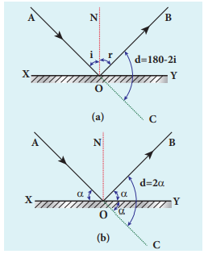
EXAMPLE 6 point 1
Prove that for the same incident light when a reflecting surface is tilted by an angle θ, the reflected light will be tilted by an angle 2θ.
Solution
A B is the reflecting surface as shown in the Figure. Both the incident ray I O and the reflected ray O R one subtend angle i with the normal N as the angle of incidence is equal to angle of reflection. When the surface A, B is tilted to A dash B dash by an angle theeta, the normal N is also is tilted to N dash by the same angle theeta. Remember that the position of the incident ray I O remains unaltered. But the reflected ray now is O R two
Now, in the tilted system, the angle of incidence, angle N dash O I equal to I plus theeta and the angle of reflection, angle N dash O R two equal to I plus theeta are the same. The angle between O N dash and O R one is, angle N dash O R one equal to i minus theeta. The angle tilted on the reflected light is the angle between O R one and O R two which is angle R one O R two. From the geometry we can write,
Angle R one, O R two equal to angle N dash O R two minus angle N dash O R one equal to (I plus θ) minus (I minus θ) angle R one O R two equal to two theta.
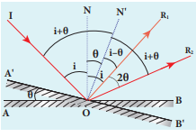
Let us consider a point object A placed in front of a plane mirror. The point of incidence is O on the mirror as shown in the Figure. 6.4 (a).
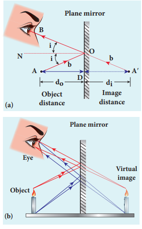
A light ray A O from the point object is incident on the mirror and it is reflected along O B. The normal is O N.
The angle of incidence angle A O N equal to angle of reflection angle B O N
Another ray A D incident normally on the mirror at D is reflected back along D A. When B O and A D are extended backwards, they meet at a point A dash. Thus, the rays appear to come from a point A dash which is behind the plane mirror. The object and its image are at equal perpendicular distances from the plane mirror which can be shown by the following explanation.
Angle A O N equal to angle D A O [Since they are alternate angles]
Angle B O N equal to angle O A dash D [Since they are corresponding angles]
Hence, it follows that angle, ∠ D A O equal to ∠O A dash D
The triangles ∆ O D A and triangle O D A dash are congruent
∴ A D equal to A dash D
This shows that the image distance di inside the plane mirror is equal to the object distance do in front of the plane mirror.
The image formed by the plane mirror for extended object is shown in Figure 6.4(b).
Table 6 point 1 Image by inclined mirrors
(360 by θ) |
The position of object placed |
Number of images n |
Even |
Symmetrical |
n equal to (360 by theta minus 1) |
|
Unsymmetrical |
n equal to (360 by theta minus 1) |
Odd |
Symmetrical |
n equal to (360 by theta minus 1) |
|
Unsymmetrical |
n equal to 360 by theta |
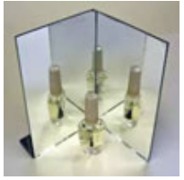
EXAMPLE 6.2
What is the height of the mirror needed for a person to see his/her image fully on the mirror?
Solution
Let us assume a person of height h is standing in front of a vertical plane mirror. The person could see his or her head when light from the head falls on the mirror and gets reflected to the eyes. Same way, light from the feet falls on the mirror and gets reflected to the eyes.
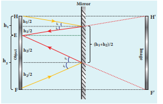
If the distance between his head H and eye E is h one and distance between his feet F and eye E is h two. The person’s total height is, h. Here it is, h equal to h one plus h two
By the law of reflection, the angle of incidence and angle of reflection are the same for the two extreme reflections. The normals are now the bisectors of the angles between the incident and the reflected rays at the two points. By geometry, the height of the mirror needed is only half of the height of the person (h one plus h two) by two equal to h by two.
Does the height depend on the distance between the person and the mirror?
We shall now study about the reflections that take place in spherical surfaces.
A spherical surface is a part cut from a hollow sphere. Spherical mirrors are generally constructed using glass. One surface of the glass is silvered. The reflection takes place at the other surface which is polished. If the polished surface of the mirror is convex it is called as convex mirror. These are shown in Figure 6 point 6.
We shall get familiarised with some of the terminologies pertaining to spherical mirrors.
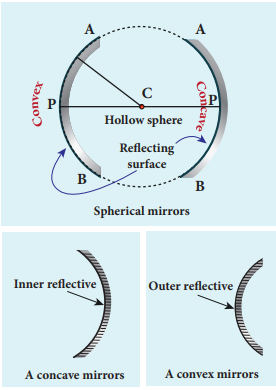
Centre of curvature:
The centre of the sphere of which the mirror is a part is called the centre of curvature C of the mirror.
Radius of curvature:
The radius of the sphere of which the spherical mirror is a part is called the radius of curvature R of the mirror.
Pole:
The middle point on the spherical surface of the mirror (or) the geometrical centre of the mirror is called pole P of the mirror (or) optic centre.
Principal axis:
The line joining the pole P and the centre of curvature C is called the principal axis of the mirror. The light ray travelling along the principal axis towards the mirror after reflection travels back along the same principal axis. It is also called optical axis
Focus (or) Focal point:
Light rays travelling parallel and close to the principal axis when incident on a spherical mirror, converge at a point for concave mirror (or) appear to diverge from a point for convex mirror on the principal axis. This point is called the focus (or) focal point F of the mirror.
Focal length:
The distance between the pole P and the focus F is called the focal length f of the mirror.
Focal plane:
The plane through the focus and perpendicular to the principal axis is called the focal plane of the mirror.
All the above mentioned terms are shown in Figure 6 point 7 for both concave and convex mirrors.
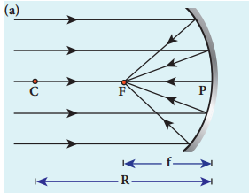
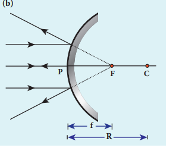
The paraxial rays are the rays which travel very close to the principal axis and make small angles with it. They fall on the mirror very close to the pole. On the other hand, the marginal rays are the rays which travel far away from the principal axis and make large angles with it. They fall on the mirror far away from the pole. These two rays behave differently (get focused at different points) as shown in Figure 6.8. In this chapter, we shall restrict our studies only to paraxial rays. As the angles made by the paraxial rays are very small, we can make good approximations
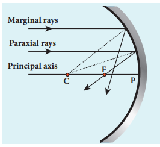
Let C be the centre of curvature of the mirror. Consider a ray of light parallel to the principal axis is incident on the mirror at M. It passes through the principal focus F after reflection. The geometry related to this is shown in Figure 6 point 9 (a). The line CM is the normal to the mirror at M. Let i be the angle of incidence and the same will be the angle of reflection.
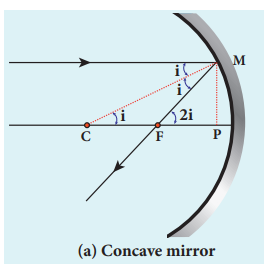
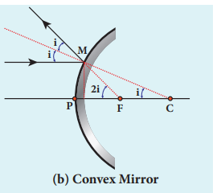
If M P is the perpendicular from M to the principal axis, then
The angles angle M C P equal to i and angle M F P equal to two i
From right angle triangles triangle M C P and triangle M F P, we can write,
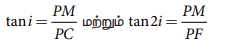
As the angles are small, tan I equivalence i and tan two I equivalence two i,
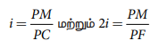
Simplifying further,
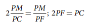
P F is focal length f and P C is the radius of curvature R.
two f equal to R(or) f equal to R by 2 equation (6.4)
Equation (6 point 4) is the relation between f and R. The construction is shown for convex mirror in figure 6 point 9 (b)
The image formed by spherical mirror can be found by ray construction called image tracing. To locate an image point, a minimum of two rays must meet at that point. We can use at least any two of the following four rays as shown in Figure 6 point 10
1. A ray parallel to the principal axis after reflection will pass (or appear to pass) through the principal focus. (Figure 6 point 10 (a))
2. A ray passing (or appear passing) through the principal focus, after reflection will travel parallel to the principal axis. (Figure 6 point 10 (b))
3. A ray passing through the centre of curvature retraces its path after reflection as it is a normal incidence. (Figure 6 point 10 (c))
4. A ray falling on the pole will get reflected as per law of reflection keeping principal axis as the normal. (Figure 6 point 10 (d))
While tracing the image, we would normally come across the object distance u, the image distance v, the object height h, the image height h dash, the focal length f and the radius of curvature R. A system of signs for these quantities must be followed so that the relations connecting them are consistent in all types of physical situations. We shall follow the Cartesian sign convention which is now widely used. It is given below and also shown in
Figure 6 point 11.
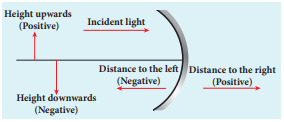
The mirror equation establishes a relation among object distance u, image distance v and focal length f for a spherical mirror.
An object A B is considered on the principal axis of a concave mirror beyond the centre of curvature C. The image formation is shown in the Figure 6.12. Let us consider three paraxial rays from point B on the object. The first paraxial ray B, D travels parallel to the principal axis. It is incident on the concave mirror at D, close to the pole P. It is reflected back through the focus F. The second paraxial ray B, P is incident at the pole P. It is reflected along P, B dash. The third paraxial ray BC passing through centre of curvature C, falls normally on the mirror at E. It is reflected back along the same path. The three reflected rays intersect at the point B’. A perpendicular drawn as A dash B dash to the principal axis gives the real, inverted image.
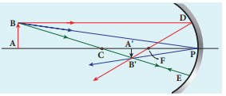
As per law of reflection, the angle of incidence ∠BPA is equal to the angle of reflection angle B dash P A dash.
The triangles triangle B P A and triangle B dash P A dash are similar. Thus, from the rule of similar triangles,
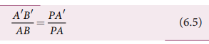
The other set of similar triangles are, triangle D P F and triangle B dash A dash F. (P D is almost a straight vertical line)
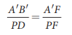
As P D equal to A B the above equation becomes
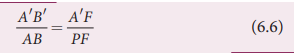
From equations (6.5) and (6.6) we can write,
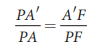
As, A dash F equal to P A dash minus P F, the above equation becomes,
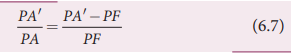
P A, P A dash and P F are mere distances; here we use sign conventions so that the expression that is derived will be a general one. The general expression thus obtained will be valid for the situations other than the one shown in figure.
∴ substituting P A equal to minus u, P A dash equal to minus v and P F equal to minus f in equation (6.7),
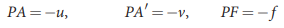
All the three distances are negative as per sign convention, because they are measured to the left of the pole. Now, the equation (6.7) becomes,
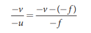
On further simplification,
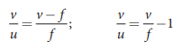
Dividing both sides with V
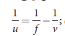
After rearranging,
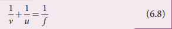
The equation (6.8) is called mirror equation. Although this equation is derived for a special situation shown in Figure (6.12), it is also valid for all other situations with any spherical mirror. This is because proper sign convention is followed for u, v and f in equation (6.7).
The lateral (or) transverse magnification m is defined as the ratio of the height of the image to the height of the object. The height of the object and image are measured perpendicular to the principal axis.
"magnification "(m) equal to height of the image h by height of the object h
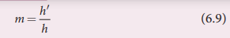
Applying proper sign conventions for equation (6.5),
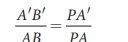
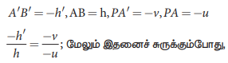
On simplifying we get,
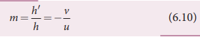
Using mirror equation, we can further write the magnification as,
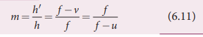